V I D E O S
(42)
V I D E O S
(42)
OZONO cuenta con una
variedad de videos, desde registros de conciertos en
diferentes formatos,
con danza contemporánea y artes plásticas simultáneas, con
poesía insonora,
así como documentales sobre la
agrupación y como banda sonora en videos de terceros:
Enlaces de los
videos, por instrumentación:
(El enlace en el nombre de la pieza es para info,
partitura, discos, videos)
Solo
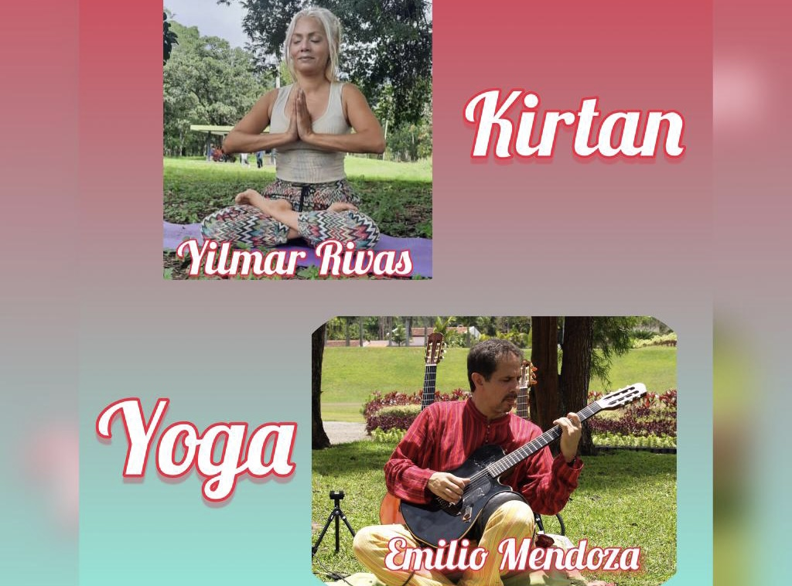
GUITARRA CON YOGA - En
el Día Internacional del Yoga, Yilmar Rivas de San Antonio
de los Altos organizó el Día de Full Yoga e invita Emilio
Mendoza a tocar su guitarra en la sesión del final. Alfredo
González realizó este vídeo de la parte central de Esperanzas,
tocada en vivo.
https://youtu.be/VEL6I0m8Mr4
DESAMORES
-Timelapse Music Clip,
video de Tomek
Baczkowski de Emilio
tocando sólo en vivo en una casa vieja
y abandonada pero limpia, en Tenerife, destruida por el
tiempo. Se realizó una hora antes de partir al aeropuerto, de
la mano experta visual del polaco Tomek.
https://youtu.be/DquDK0cF54k
ESPERANZAS-2015,
video de Tomek
Baczkowski de
Emilio sólo en vivo.
Emilio grabado parcialmente en un concierto en el
TwinFin Surf Camp, Tenerife, en la última noche que se
convierte en una hojeada al camp fabuloso de Nico Abad.
https://youtu.be/49nZwia29WQ
Dúos

ENCUENTRO EN AMSTERDAM -
Una inspiración espontánea con Juan García (alias "Tepuy"),
exalumno de mis clases de guitarra en San Antonio, a
quien no había visto en persona desde el 22 de noviembre,
2019, cuando nos presentamos juntos en un concierto en el
TwinFin Surf Camp, Adeje Bajo, Tenerife. Estando yo a
finales de julio, 2024, en el apartamento de mi hija
Emiliana y su esposo Alberto Libretti en Amsterdam, Juan
pudo pasar un ratico ya que iba a otros compromisos, y nos
pusimos a tocar improvisando lo que saliera, yo en la
guitarra y él en la flauta Bansuri de la India, que ahora
fabrica por pedidos. Brotó la magia de la conexión musical en
sincronía viva.
https://youtu.be/VmWOVWchK-Y
ESPIRALES
- Pedro y Emilio en el Complejo Cultural, San Antonio, al
final del acto de entrega de la Orden María Rivas a Emilio,
13-06-2021, por el Alcalde Josy Fernández y el Presidente del
Consejo Municipal de Los Salias, Edgar Laya.
https://youtu.be/BpaloDORgko
CANCIÓN DE CUNA
- Por TV Salias, ensayo de Juan y
Emilio en La Perla de la pieza Cuna en formación
https://youtu.be/CAptjOZTc_4
CANCIÓN DE CUNA
- Por Anjani Kumar, en el cumpleaños de Ávila, hija del Agregado Cultural de la Embajada de
la India, guitarra con tablã.
https://youtu.be/aMQcdVwtJEI
ENCANTO, ESPIRALES
(frag) - Expo de Amarillo Piña, Los Teques, Juan y Emilio
https://youtu.be/s5whU9JMr-A
ESPERANZAS-2015
- Ensayo de Juan y Emilio en La Perla, la primera vez que se
completa la canción de arriba a abajo.
https://youtu.be/Kw8rbybvP6A
ESPIRALES -
Concierto en la
Universidad Monteávila,
Caracas, guitarra con tablã
https://youtu.be/SSR3yrdADuk
EVOLUCIÓN -
Concierto en el Laberinto Cromovegetal (Carlos Cruz-Diez),
USB, Caracas, guitarra con tablã
https://youtu.be/TsWhqPZtTsM
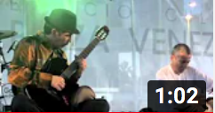
EVOLUCIÓN -
(fragmento) Concierto en Plaza Venezuela, Caracas, guitarra con tablã
https://youtu.be/YKZw1O4AzdY
LABERINTO -
Concierto en la Universidad Monteávila,
Caracas, guitarra con tablã
https://youtu.be/QCKTEd8XwTM
TERRUÑO -
Concierto de Protesta USB, Caracas, Juan y
Emilio
https://youtu.be/CQ0qMo8_xQw
Tríos

ENCANTO - Joroponovo arpeado - Video
de ESCINETV, Concierto AdM, Unearte, Emilio, guit 6; Juan,
guit 12; Lizardo, maracas
https://youtu.be/kt6R3g5Gzm8
ESPIRALES
- Joroponovo
bandoleado - Video de ESCINETV,
Concierto AdM, Unearte, Emilio,
guit 6; Juán, guit 12; Lizardo, maracas, con anuncio de la
solicitud enmienda de la constitución.
https://youtu.be/amZdaHGXQXM
Estas dos piezas arriba se pueden ver dentro del documental
completo del Concierto Homenaje a Alfredo del Mónaco,
realizado por Beatriz Bilbao y María Cristina Capriles por
parte de ESCINETV, en la Sala de Conciertos, Unearte, Caracas, el 17-07-2016.
Existen tres versiones de este documental de diferentes
duraciones:
4 min trailer: https://youtu.be/o3YwNVFDNN0
45 min: https://youtu.be/zcKuam6FKe0
2h 15 min: https://youtu.be/W080cbAhWAU
AGUACLARA -
A Musical Afternoon by Anjani Kumar, en la casa de la Embajadora de la India,
Country Club, Caracas, Emilio, Juan y Marcy
https://youtu.be/eUoFl6-nbJA
ESPIRALES -
A Musical Afternoon by Anjani Kumar, en la casa de la Embajadora de la India,
Country Club, Caracas. Emilio, Juan
y Marcy
https://youtu.be/JZw9lgqhdpo
ESPIRALES
- Concierto de Protesta - USB, Caracas, Emilio y Juan, con
la actuación especial de María José Castejón, maracas.
https://youtu.be/OEndzPrbeZY
ESPIRALES
- Joroponovo bandoleado, boda de Emiliana y Alberto en Caracas, con Emilio, guit 6; Juan, guit 12; Lizardo,
maracas
https://youtu.be/7jCA6l_RoCI
ENCANTO -
Joroponovo arpeado, boda de Emiliana y Alberto en Caracas, con
Emilio, guit 6; Juan, guit 12;
Lizardo, maracas
https://youtu.be/6-DKm4y8nqQ
ENCANTO
- En casa de Emiliano, en San Antonio, Emilio, guit 6; Juan, guit 12; Dha Maharaj,
tablã
https://youtu.be/2XPM3BUilgk
Cuartetos
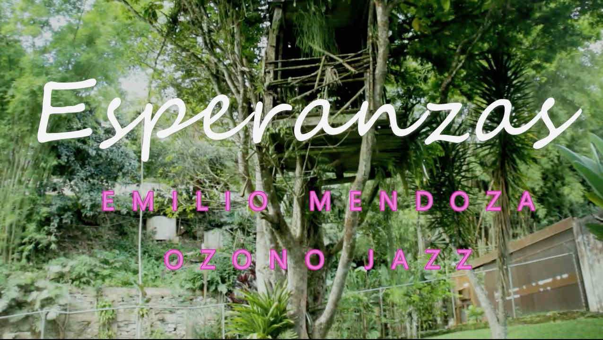
ESPERANZAS
- Dirección:
Harold Cooper. Música: Emilio Mendoza, en ejecución de
Ozono Jazz, CD Guarapiche Blues, 2020, realizado
en coproducción con ESCINETV, Escuela de Cine y TV,
Caracas, como curso de videoclip, 30-12-2023.
RESPLANDOR
- Club Jóspital, La Laguna, Tenerife, 23-11-2019, concierto
sin ensayo con Steve, Jenka y Marie, producción del TwinFin
Surf Camp, Nico Abad.
https://youtu.be/8dEQ5ESkzsI
Septetos
 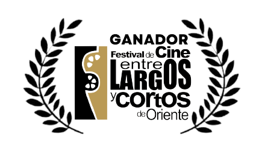
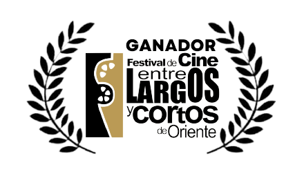
GUARAPICHE BLUES
con María Rivas - Video de Jorge
Gómez Plazola y ESCINETV, con la grabación del track del disco
homónimo.
• Festival ELCO Entre Largos y Cortos -
Selección Videoclip Venezolano - Ganador Mejor Banda Sonora,
06-01-2022. Venezuela.
• Festival Cinearte en la Frontera 2022, XII
Encuentro para Cinéfagos - Video Musical - Selección Oficial.
6, 7, 8-10-2022, San Cristóbal, Venezuela.
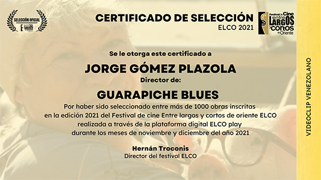 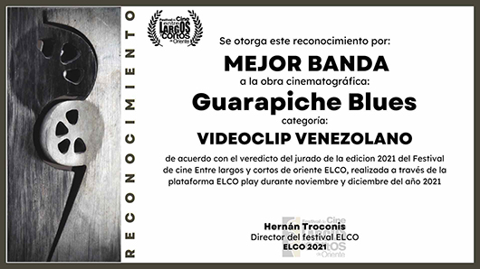 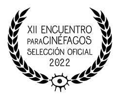 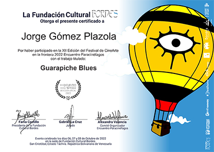
https://youtu.be/9Kvu6oakxJk
ESPIRALES -
Video de Carlos Eduardo Bertorelli, con la bailarina estrella Sara
Angelina Conde Mendoza, con la grabación del track del disco Natura, realizado
en los estudios de la USB, Caracas.
https://youtu.be/z21tLTyfgiQ
Con
Danza & Pintura
CANCIÓN DE CUNA
- video de Rancho Wladimir Pérez de Ozono con danza por parte
de Nathalia Molina y Nayibe Berroterán, grabado en vivo en el
Teatro Emma Soler, Los Teques.
https://youtu.be/IzYuAI2q1wc
ENCANTO
- video de Rancho Wladimir Pérez de Ozono junto al
artista plástico Andrés Amarillo Piña, grabado en vivo en
el Teatro Emma Soler, Los Teques.
https://youtu.be/aY0kgz2Ey8I
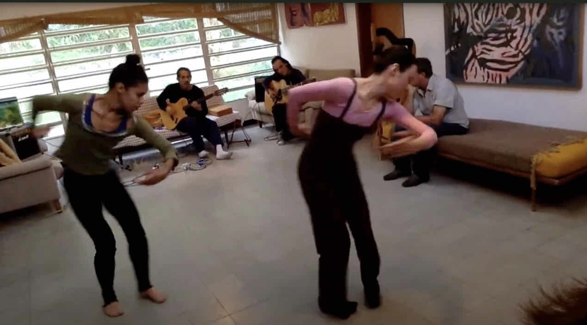
COREOGRAFÍA CANCIÓN DE CUNA
- Ensayo en La Perla, El Toronjil, de la
coreografía realizada y puesta en escena por Nayibe
Berroterán y Nathalia Molina, a la pieza Canción de
Cuna (E. Mendoza), según el lenguaje de Carlos Orta.
Guitarras: Emilio Mendoza, Juan Lizardo, cámara:
Tilín Rosas, observador: Catire Francisco.
https://youtu.be/0_k7hroR744

ENSAYO PARCIAL - COREOGRAFÍA CANCIÓN DE
CUNA - Ensayo en La Perla, El Toronjil
de parte de la coreografía de Nayibe Berroterán y
Nathalia Molina, a la pieza Canción de Cuna (E.
Mendoza), según lenguaje de Carlos Orta. Guitarra:
Emilio Mendoza, Cámara: Sari Conde Mendoza
https://youtu.be/D0QHl1wbJ8g
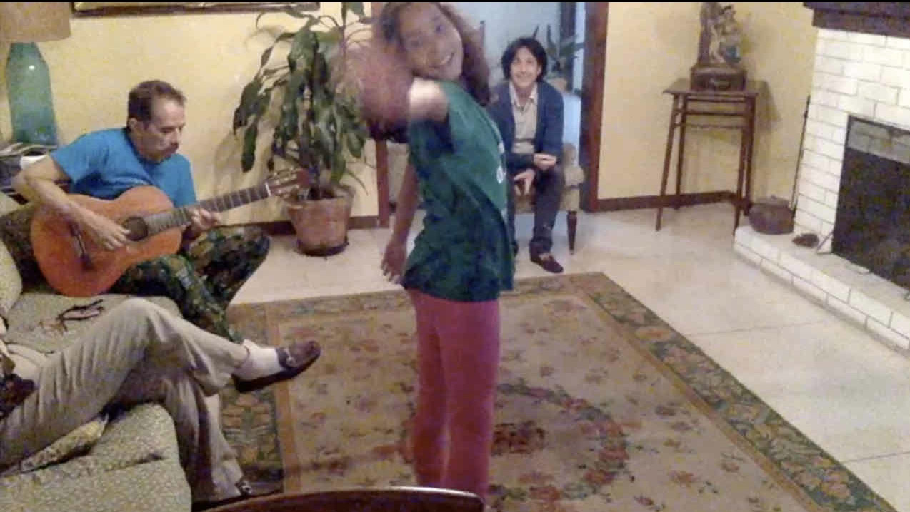
SARI DANZA - CANCIÓN
DE CUNA - Sara Angelina
Conde Mendoza, danza, Emilio Mendoza,
guitarra, con la presencia de Belengo
Barrios y su bisabuela Graciela Benatuil
de Olmos, en la Quinta Los Olmos, El
Toronjil, San Antonio de los Altos, el
20-05-2015, según la coreografía a dúo
de las dos bailarinas de Coreoarte,
Nathalia Molina y Nayibe Berroterán.
https://youtu.be/qehjINh_8b4
Octetos
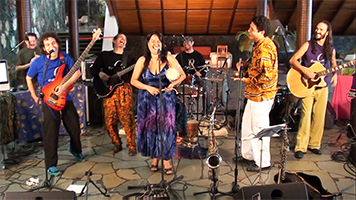
ESPIRALES
- Concierto de OzonoJazz EN VIVO en el vestíbulo del Hotel Humboldt, Cerro
El Ávila (Warairarepano), Caracas, producción
de León
Zapata para Vive-TV y Ozono Jazz.
El
programa no se editó ni salió al aire por parte
de ViveTV. Video de cámara fija de referencia.
https://youtu.be/F01LrsCWPs0

SILENCIO DE
LUZ - Concierto de OzonoJazz EN VIVO en el
vestíbulo del Hotel Humboldt, Cerro El
Ávila (Warairarepano), Caracas, producción de León
Zapata para Vive-TV, y Ozono Jazz. El programa no
se editó ni salió al aire por parte de ViveTV. Video
de Rancho Wladimir Pérez, producción Ozono.
https://youtu.be/LVBcVVE75Cc

TERRUÑO
- Concierto de OzonoJazz EN VIVO en el
vestíbulo del Hotel Humboldt, Cerro El
Ávila (Warairarepano), Caracas, producción
de León Zapata para Vive-TV, y Ozono
Jazz. El programa no
se editó ni salió al aire por parte de ViveTV.
Video con las fotografías
de Nico Abad del tepuy
Roraima, edo. Bolívar.
https://youtu.be/e7NeN3GmOjw
Con
Poesía Insonora
DESAMORES -
El video de Tomek, pero con poesía insonora escrita
por Andrea Sucre
https://youtu.be/GXJNExXnDGw
Documentales
GIROS - Catálysis
1973, película muda de 16 mm , grabada por Pedro Galindo en
vivo en concierto de junio 1973, con la banda sonora de la
misma pieza pero grabada por la banda Akurima, 2005.
Primer solo grabado
de Emilio al estilo bandoleado.
https://youtu.be/gdOP7V2BMlk
"Nuevo disco en construcción...", video de Nabor
Sambrano para FamiliaTV, "Rastros y Rostros", documental
extenso con entrevistas a todos los músicos, mientras asisten
a un ensayo en un estudio en Bello Monte, con un toque breve
al final.
https://youtu.be/sKb7pwr90Xw
REENCUENTRO
- Inseparable amistad musical. Grabación casera en la última
noche de Emilio de su visita al apartamento nuevo de Zulay e
Ike, en Florida, EEUU, donde estrenan una primera versión de Añoranza con
cuatro y dos guitarras.
https://youtu.be/nUzClVQxoBQ

CHARLA
“La industria de música popular sin fines de lucro: El Proyecto Ozono Jazz de composición y difusión con sentido ecológico”,Grabación
de dos piezas, Canción de Cuna y
Encanto en video, y podcast simultáneo usando una selección
de guitarras Rodríguez en la tienda Beraca
Music, Santa Cruz de Tenerife, Islas Canarias,
España. Producción asistida por Pedro Galindo,
viejo querido amigo.
https://www.youtube.com/watch?v=FaViqC0AO1g
Banda sonora
ESPIRALES y
ENCANTO
(frag.) en trío en la Amarillo Piña Expo en C.C. El Recreo, Emilio, guit 6; Juan, guit
12; Lizardo, maracas
https://youtu.be/PPNicLsfDik
ESPIRALES -
“Una Visión de mi Entorno” de Mardonio Díaz, de la grabación
en el disco Natura,
sobre San Antonio de los Altos.
https://youtu.be/H0zmkzJKE-s
EVOLUCIÓN -
“Una Visión de mi Entorno 2” de Mardonio Díaz, de la grabación en el disco Natura, sobre San
Antonio de los Altos.
https://youtu.be/nkXRQIwIIW
{kind=link}